SVG-friendliness criteria
Each variant is judged on how easily it can be traced or rebuilt as a vector character rig (Rive, Figma, Illustrator). The cleaner the source, the less manual cleanup before animation.
Must have
- Flat colors — no gradients, no rendering, no soft shading
- Bold uniform outlines — consistent ~3–4px black strokes
- Limited palette — 5–7 brand-aligned solid fills
- Simple geometric shapes — circles, ellipses, rounded rectangles
- Strong silhouette — character readable in solid black
- White background — clean cutout-friendly composition
- No textures — fur grain, fabric weave, noise
- No depth tricks — drop shadows, ambient occlusion, painterly fades
The friendly guide
Polar bear in orange hard hat and high-vis vest. Warm, Midwestern, knows the routes. Greets you in Scene 1, advises throughout. Three poses: waving (hello), thumbs-up (confidence beat), clipboard (helpful inspector).
Hear Greg's voice
ElevenLabs · Mike Rowe-meets-Yogi-Bear brief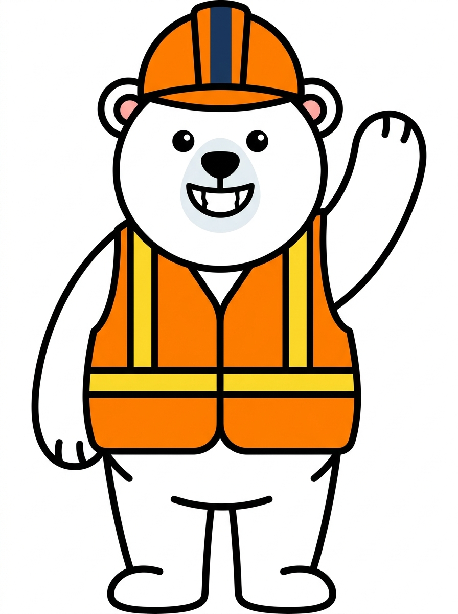
✓ Textbook flat vector. Pure outlines, zero shading. Sharp tooth detail is a design choice — could read playful or aggressive depending on context.
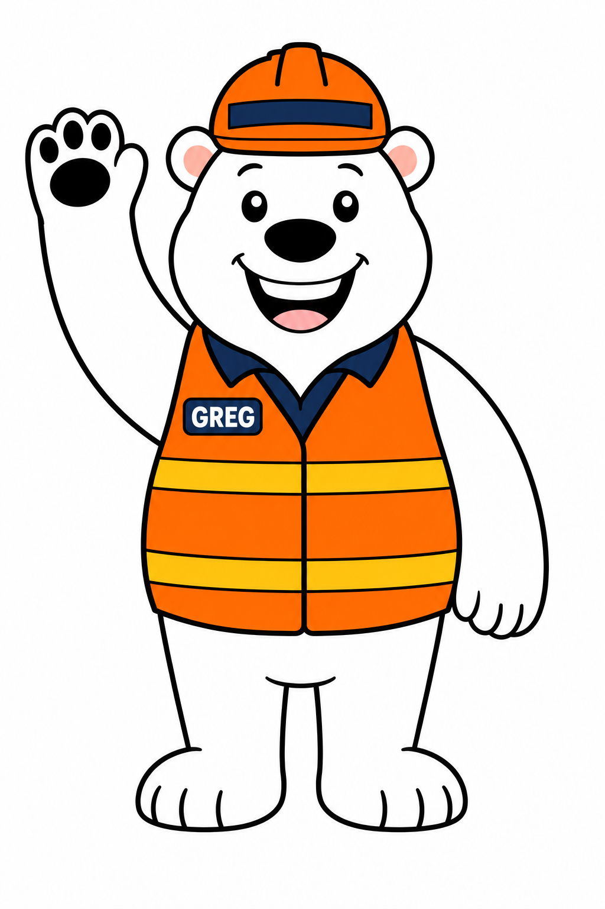
~ Charming American-mascot vibe (added "GREG" name patch unprompted). Slightly variable line weights — needs cleanup before SVG conversion.
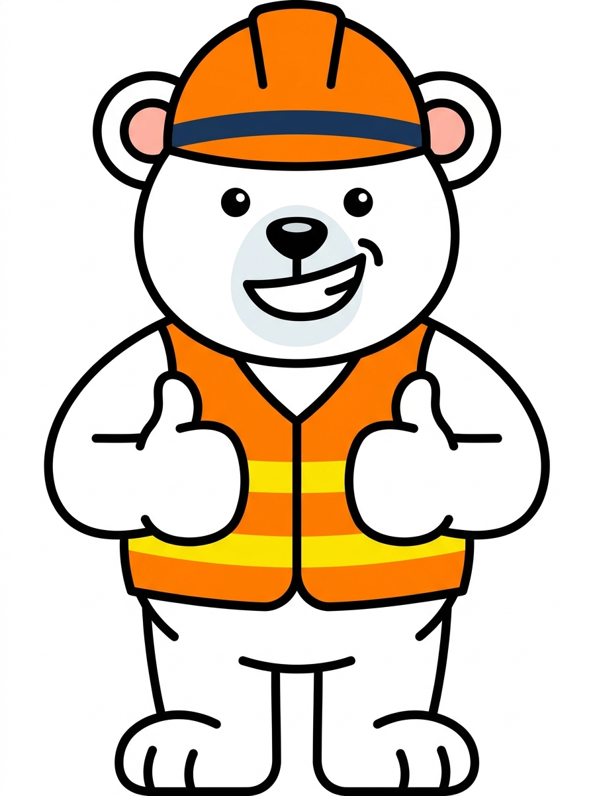
✓ Beautifully clean. Geometric paws, perfectly flat fills, simple grin curve. Direct trace-to-SVG candidate.
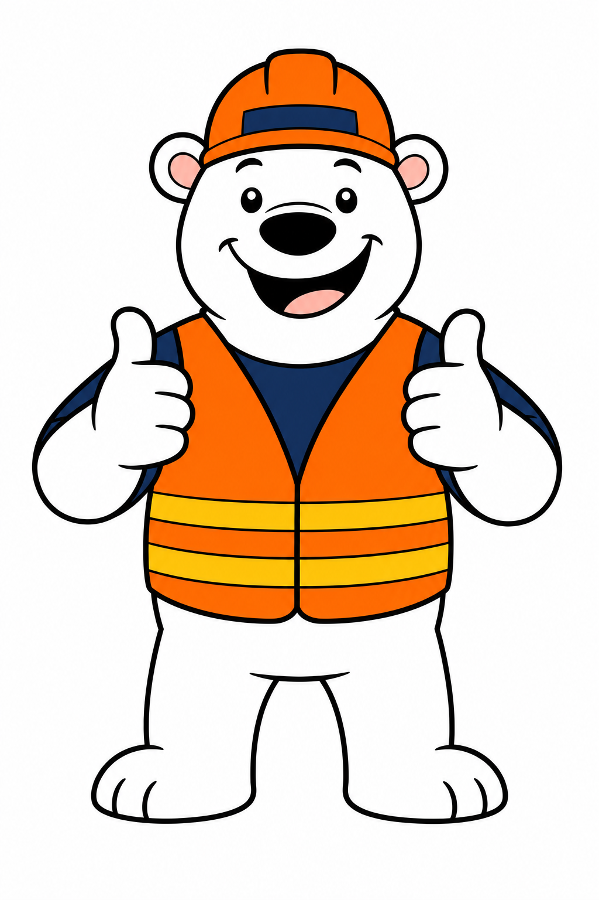
~ More expressive face but introduces small detail elements. Useful as a personality reference; harder as a vector source.
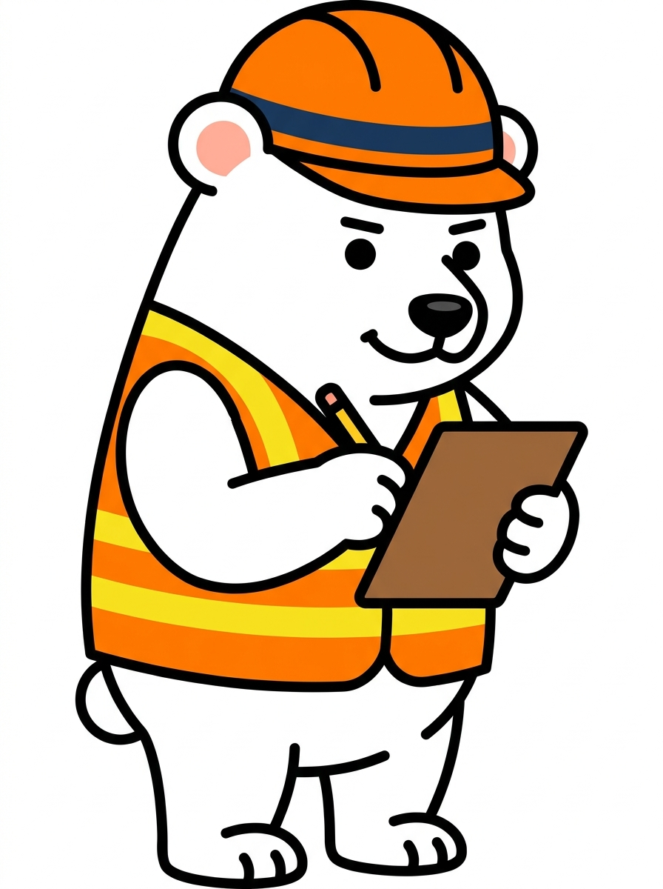
✓ Excellent 3/4 angle, vest stripes simplified, clipboard reads instantly. The most "production-ready" of the three Greg variants.
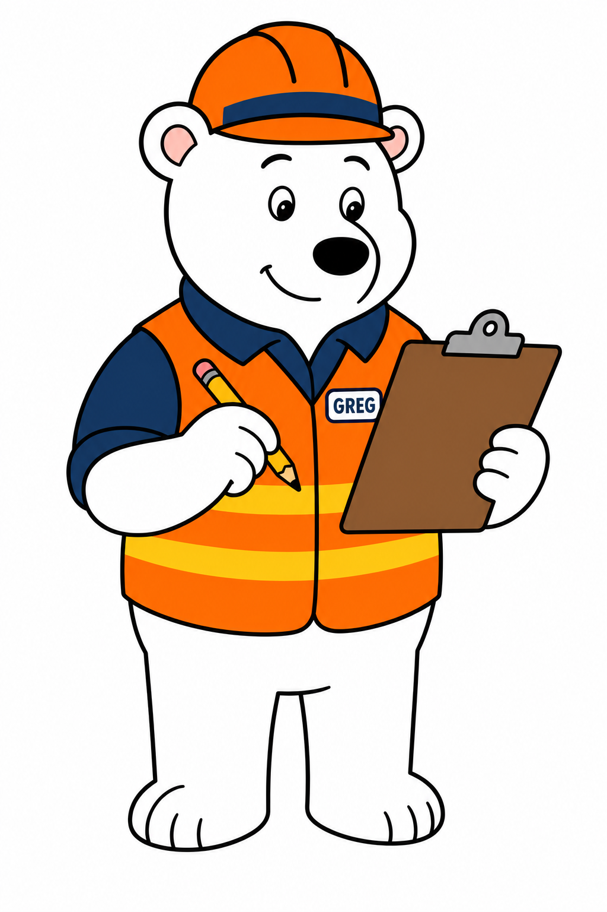
~ Action reads well. Style drift toward classic Disney-mascot proportions — different feel than the Nano set.
The wisecracking sidekick
Mechanic in a navy jumpsuit. Sardonic, knows what he's doing, calls out the nonsense. Steps in for sizing advice, prohibited items, and reality checks. Three poses: arms crossed (skeptic), whistle (alarm), wrench (working).
Hear Tyler's voice
ElevenLabs · Ron-Swanson-at-30 brief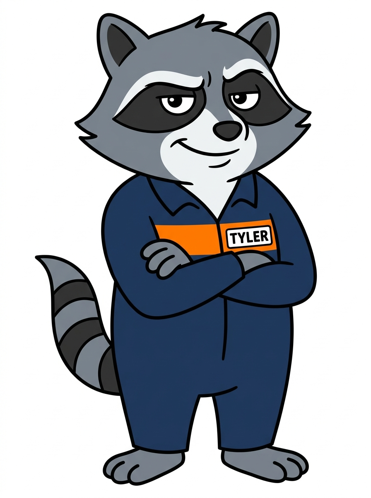
✓ Captures the personality perfectly. Mask, tail stripes, name patch all read at a glance. Strong silhouette.
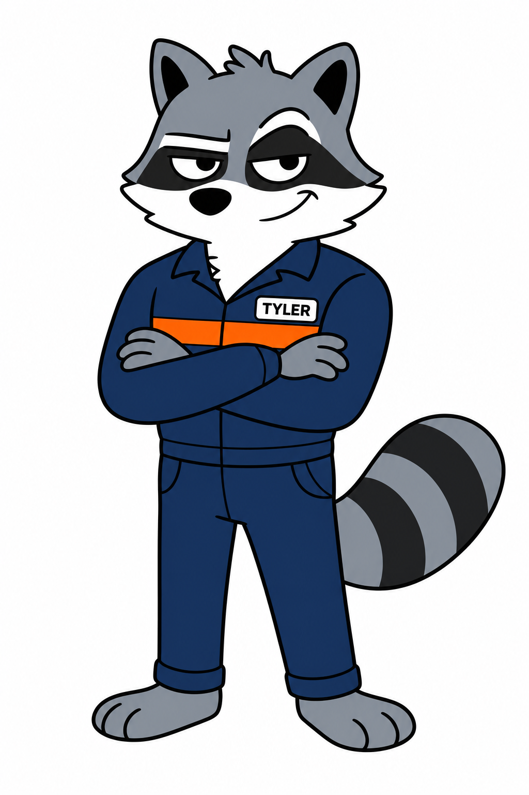
~ Slightly stockier, more "kids-show villain" energy. Good face read, fewer painterly fills than I'd feared.
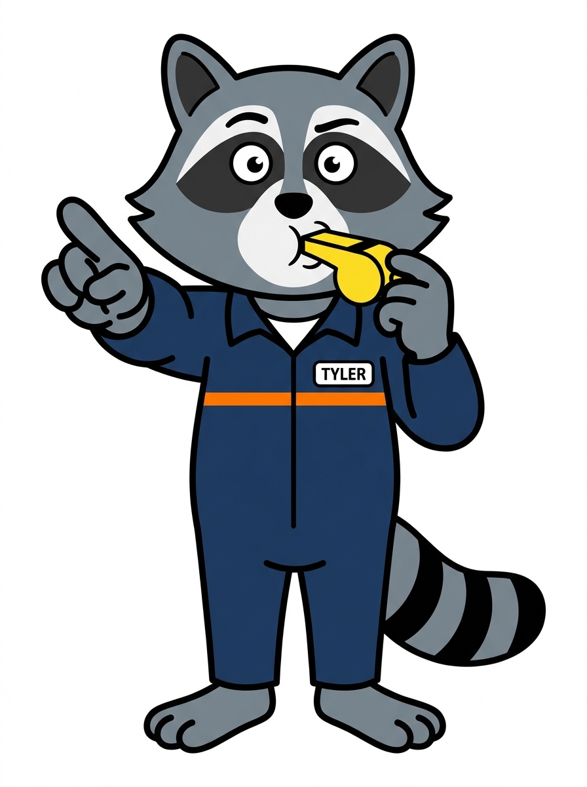
✓ Wide eyes sell the alarm beat. Whistle is rendered cleanly — a single yellow shape, easy to redraw.
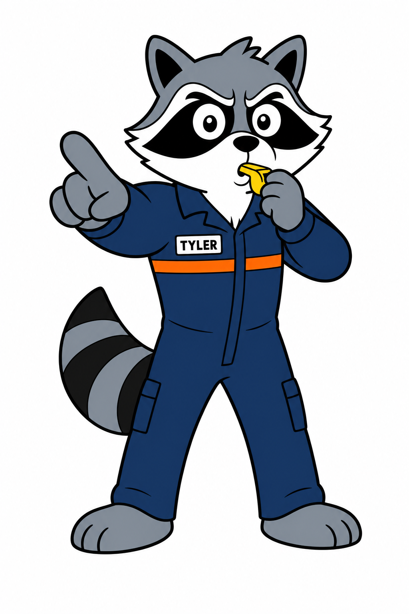
~ Compare side-by-side for style direction. Stylistic divergence is visible — pick a lane before commissioning final art.
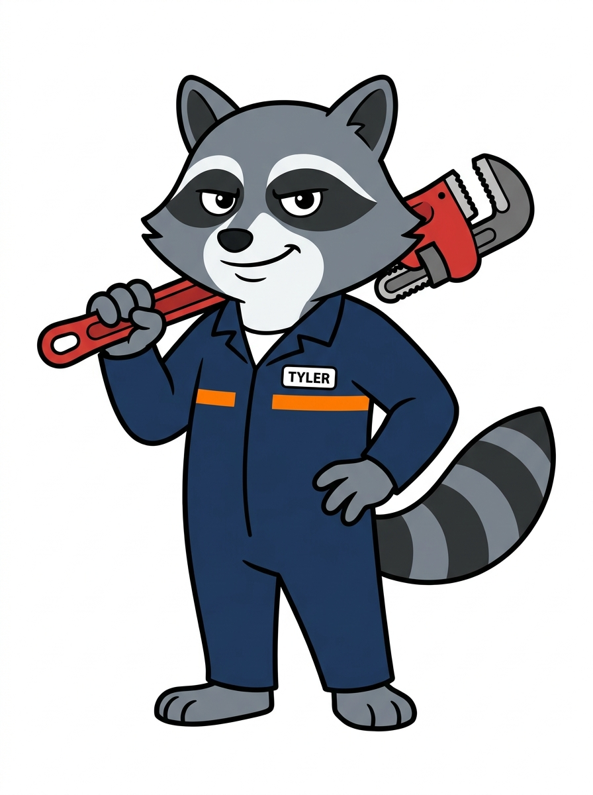
✓ Best of the Tyler set. 3/4 angle, confident stance, wrench reads clean. Tail curl gives natural balance to the pose.
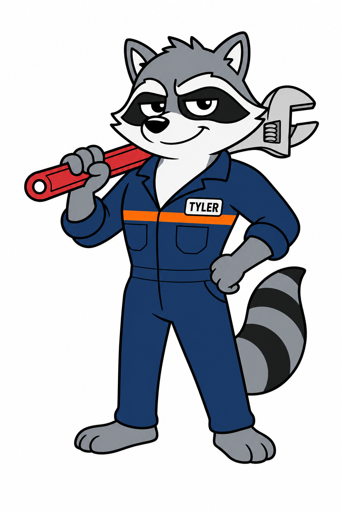
~ Different proportions — more anthropomorphic, less raccoon. Useful tonal reference but a different character world.
Where I'd land
Honest read after seeing all twelve. Both providers can produce charming characters — but for this brief (SVG-conversion-ready cartoon mascots), one of them is meaningfully closer to ship.
Pick Nano Banana, refine, then commission.
Across all six head-to-head comparisons, Gemini 3 Pro Image (Nano Banana) produced cleaner, more uniformly outlined, more SVG-ready output. The fills are flat, the line weights are consistent, the silhouettes are strong. The OpenAI variants are charming but skew toward classic American-mascot proportions with subtle gradient hints and variable line weights — usable as tonal references, not as vector sources.
USE FOR PRODUCTION
Nano Banana set — particularly Greg-thumbsup, Greg-clipboard, Tyler-arms, Tyler-wrench. Trace these directly into Rive or Illustrator.
USE AS REFERENCE
OpenAI set — keep for personality, expression cues, alternate framing options. Hand to an illustrator alongside the Nano set as "two flavors to triangulate from."
Suggested next step: commission a freelance illustrator (Fiverr/Dribbble) to take the four strongest Nano variants and hand-draw them in Illustrator with proper Pantone-matched flat fills. Budget: $400–800 for both characters in 6+ poses each. From there, the rig moves into Rive for animation. The AI generations got us 80% of the way to a brief — the last 20% is what makes them feel custom-made and ownable.